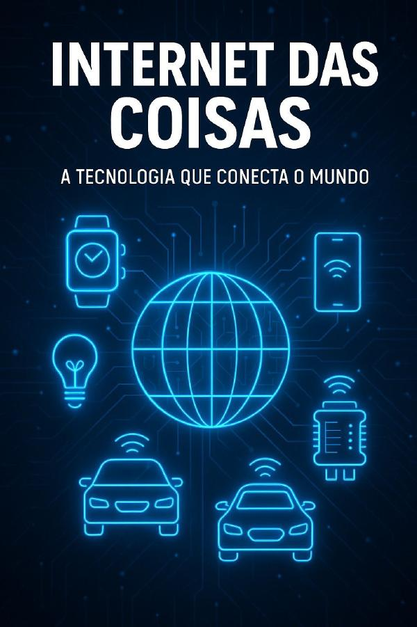

Sobre esta Cartilha
Descubra como a Internet das Coisas está revolucionando nossa forma de viver e trabalhar. Explore os conceitos, aplicações e o futuro desta tecnologia transformadora.
Conceitos Fundamentais
Conectividade e Protocolos
Aplicações Industriais
Smart Home e Cidades